TWO STROKE "AUTOLUBE"
OIL PUMPS
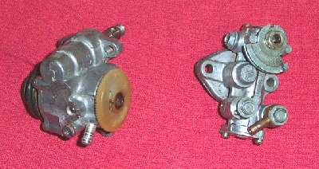
Matthew 25:4
¶ In the old days, two stroke engines used a fuel mixture of gas and oil called Pre-Mix. This worked fine at high speeds but at low speeds there was too much oil. This caused problems like fouled spark plugs and plugged mufflers.
The two stroke manufacturers came up with a great cure. Injection oil pumps. These pumps add just the right amount of oil for whatever RPM the engine is running. The oil was stored in a Oil Vessel, also known as an Oil Tank. Depending on how hard you ran the engine, the oil could last through several tanks of gas. No more pre-mixing your oil and gas.
At an idle the pump mixes the oil with the gas from a 120 to 1 ratio on up to 20 to 1 ratio at 8000 or more RPM. These pumps worked great and really helped the oiling problems of two strokes. Two strokes now fouled their spark plugs less, didn't carbon up their mufflers as much and saved money by using less oil.
These pumps are controlled by an extra throttle cable and deliver the oil either to the throat of the carburetor or directly to the main bearings. They are quite reliable, but a lot of people still seem to want to disconnect them. Why? I do not know. Most all have a little bleed screw on their side. If you run the oil tank dry, you will need to remove that screw till oil comes out the hole. Put the screw back in and your bled! If there is no bleed screw, loosen the oil inlet hose bolt and bleed it from there.
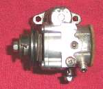 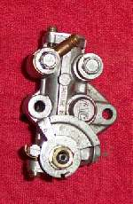 I know there are a number of other then "Japanese" autolube type pumps out there but I've never run across them here in the "Wilds" of Idaho, USA. If someone can send me some pictures and spec's on any I'll be glad to put them up here.
All these pumps must be set so the wider you open the throttles, the more oil they pump. Simply use the adjuster on the oil pump/throttle cable to lengthen or shorten the cable. On the Yamaha pump, align the Pin and Dot. On the Mikuni, align the two lines.
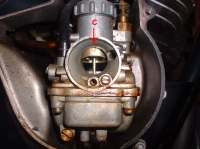 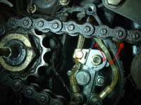 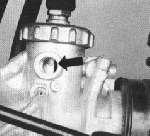 On some of the earlier (1960s and early 70s) Japanese rotary valve two strokes, you used a different method. You removed the carb cover and then opened the throttle till a mark on the throttle slide (C) matched the top of the Carburetor Venturi opening. Now adjust the oil pump marks (A&B) to align, and you were done. Just to make things interesting, some bikes require you to open the throttle wide open and then align the marks on the pump and others had the mark on the side of the carb slide and you took out a plug to see it. It would pay to check your shop manual!
Bottom line? These pumps are very reliable and work great, but you must adjust them so their maximum flow is at the engines maximum RPM. Check that shop manual! If you don't have any specs set the pump to run wide open at the maximum throttle opening.
On old two strokes you may find that they smoke like crazy. This is because of two things. One, the engine is worn and doesn't burn the fuel as well as it did when new. Two, The seals are old and get hard. Oil from the transmission gets past the seal, and into the engine. If you cut back on the oil in the gas, and the seals soften up and start sealing, you could blow the engine up. The cure is new crankshaft oil seals.
Below are some pictures of oil pumps and example settings. You can use these as a guide, but again I say "Check your shop manual!"
Here are some styles or examples of how two stroke engines can be oiled.
All this is all probably more then you will ever want to know about oil injection pumps. Remember, if you just are not sure that your pump is working, simply run 20 to 1 Pre-Mix for fuel. Then the worst that will happen, is that you will foul out a lot of spark plugs and smoke a lot!
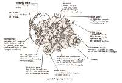 Yamaha AutoLube Pump Description |
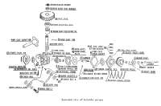 Exploded Yamaha AutoLube Pump |
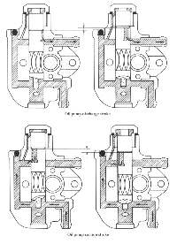 Kawasaki Oilpump Internal Flow. |
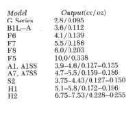 Kawasaki Oilpump Output Specs Run engine on 20:1 Pre-Mix at 2000 RPM while holding pump control lever wide open for three minutes. |
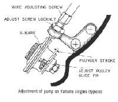 Setting Yamaha Single Cylinder Oil Pump |
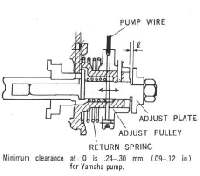 Yamaha Oilpump Stroke measurement. |
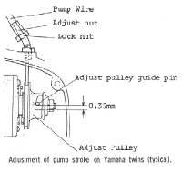 Oilpump Setting Yamaha Twin. |
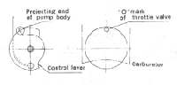 Bridgestone 350 Twin Oilpump Setting |
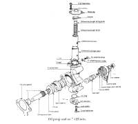 Suzuki T-125 Oilpump |
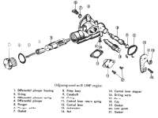 Suzuki B100P Oilpump |
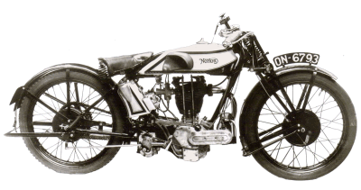 |
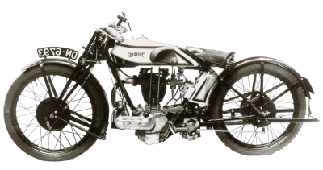 |
Copyright © 1999-2015 dansmc.com. All rights reserved.